نقطه آغاز این پژوهش، شناسایی یک چالش روششناختی در مطالعات حوزه نوروآرکیتکچر است. بخش قابلتوجهی از پژوهشهای انجامشده در این حوزه، بر بررسی تأثیر یک متغیر مستقل بر پاسخهای شناختی، عاطفی یا فیزیولوژیک افراد متمرکز بودهاند. این رویکرد، اگرچه امکان بررسی دقیق اثر یک ویژگی مشخص از محیط را فراهم میکند، با ماهیت پیچیده و چندبعدی معماری همخوانی کامل ندارد. زیرا محیط معماری حاصل تعامل و درهمتنیدگی مجموعهای از ویژگیهای فضایی، بصری، هندسی و مادی است و تغییر یک متغیر میتواند بهطور همزمان بر سایر ویژگیهای محیط نیز اثر بگذارد.
ازاینرو، تمرکز بر یک متغیر مستقل بهتنهایی ممکن است نتواند تصویری جامع از نحوه تأثیر محیط معماری بر فرد ارائه دهد. این پژوهش با بهرهگیری از روشهای پردازش تصویر، در پی آن است که محدودیت ناشی از بررسی تعداد محدودی از متغیرهای مستقل را کاهش دهد و امکان تحلیل همزمان طیف گستردهتری از ویژگیهای محیطی را فراهم کند. هدف نهایی، دستیابی به درکی جامعتر از رابطه میان ویژگیهای محیط معماری و پاسخهای انسانی و حرکت به سوی رویکردی چندمتغیره در مطالعات نوروآرکیتکچر است.
پیشینه پژوهش
هفت مقاله، به ترتیب سال انتشار
آزمایش انسانی
بازتحلیل دیتاست
بدون آزمایش انسانی
2006
[Jan Wienold, Jens Christoffersen]
Evaluation methods and development of a new glare prediction model for daylight environments with the use of CCD cameras
Wienold و Christoffersen در این پژوهش به این مسئله میپردازند که شاخصهای موجود برای ارزیابی discomfort glare در فضاهای دارای نور روز، مثل DGI، CGI و BGI، عمدتاً با آزمایش روی منابع نور مصنوعی و کوچک توسعه یافتهاند و برای پنجرههای بزرگ و منابع نامنظم مثل Venetian blind پیشبینی قابلاعتمادی ندارند. برای ارزیابی این شاخصها و ساخت مدلی جدید، آزمایشهای کاربری در دو آزمایشگاه نور روز انجام شد: SBi در Hørsholm دانمارک و Fraunhofer ISE در Freiburg آلمان. در هر مکان دو اتاق یکسان وجود داشت؛ یکی برای شرکتکنندگان (test room) و دیگری برای تجهیزات اندازهگیری (reference room). در مجموع 76 شرکتکننده ناآشنا با موضوع (48 مرد و 28 زن، 22 نفر در SBi و 54 نفر در ISE، در بازه سنی 20 تا 59 سال) در شرایط آسمان صاف، بین سپتامبر 2003 و دسامبر 2004، در آزمایش شرکت کردند. متغیرهای آزمایش شامل سه اندازه پنجره (کوچک، متوسط و بزرگ با نسبت سطح شیشه به نما حدود 21 تا 89 درصد)، سه سیستم سایهبان (Venetian blind سفید، Venetian blind آینهای و lamella عمودی با پوشش شفاف با عبور نور 2 درصد) و دو جهت دید نسبت به پنجره (موازی، 90 درجه، و مورب، 45 درجه) بود. به دلیل محدودیت زمانی، طرح آزمایش بهصورت between-subject اجرا شد و ترتیب ارائه اندازه پنجرهها و جهتهای دید با اصل Latin Squares متعادل شد. هر جلسه حدود 1 ساعت و 45 دقیقه طول میکشید و هر اندازه پنجره حدود 30 دقیقه ارزیابی میشد، با یک وقفه 5 دقیقهای هنگام تغییر پنجره. شرکتکنندگان در این مدت وظایف معمول اداری مانند خواندن متن روی کاغذ، کار با کامپیوتر و letter-search انجام میدادند و سپس پرسشنامه را تکمیل میکردند. در پرسشنامه، شدت glare روی مقیاس خطی و مقیاس چهارسطحی (imperceptible، noticeable، disturbing و intolerable) رتبهبندی میشد و شرکتکنندگان راحت یا ناراحتکننده بودن شرایط را برای کار روزانه اعلام میکردند. پس از حذف هفت آزمون به دلیل خطای راهاندازی، 349 مورد معتبر برای تحلیل باقی ماند.
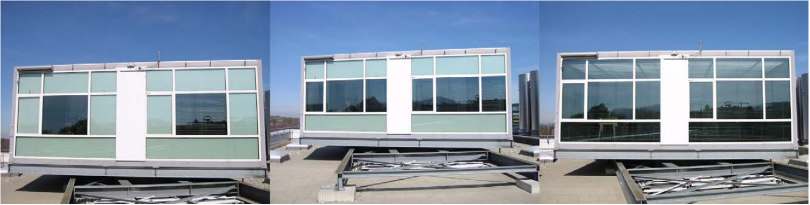
همزمان با ارزیابی ذهنی، توزیع luminance در میدان دید کاربر با دوربین CCD کالیبرهشده (TechnoTeam LMK 98-2 در ISE و LMK Mobile در SBi) با لنز fisheye با میدان دید 183 درجه، در موقعیت چشم و در کنار یک سنسور vertical illuminance ثبت شد. تصاویر به فرمت Radiance تبدیل شدند و صحت آنها با مقایسه vertical illuminance اندازهگیریشده و مقدار محاسبهشده از انتگرال تصویر luminance تأیید شد. برای تبدیل تصویر به شاخص، ابزار جدید evalglare توسعه یافت که بهطور خودکار glare source ها را تشخیص میدهد. از میان سه روش آزمونشده، روش مبتنی بر task-zone luminance انتخاب شد: میانگین luminance یک ناحیه دایرهای با زاویه فضایی حدود 0.53 sr روی مانیتور و میز محاسبه میشود و هر پیکسلی با luminance بیش از چهار برابر این میانگین بهعنوان glare source شناخته میشود. پیکسلهای نزدیک به هم با یک search radius (در نهایت 0.2 sr) به یک منبع تجمیع میشوند و peak های بسیار روشن (بیش از 50,000 cd/m²) که ناشی از بازتاب مستقیم خورشید هستند، جداگانه استخراج میشوند. سپس برای هر منبع، luminance متوسط، solid angle و position index (بر پایه Guth برای منابع بالای خط دید و Iwata–Tokura/Einhorn برای منابع پایین آن) محاسبه میشود. با این کمیتها، DGI و CGI روی تصاویر محاسبه و با پاسخ کاربران مقایسه شدند. چون تفاوتهای فردی در ادراک glare پراکندگی زیادی ایجاد میکرد، مقیاس چهارسطحی به دو دسته «disturbed» (disturbing یا intolerable) و غیر آن کاهش یافت و 349 مورد بر اساس هر شاخص در 12 کلاس 29تایی گروهبندی شد تا درصد افراد ناراحتشده در هر کلاس بهعنوان احتمال glare به دست آید. نتیجه نشان داد window luminance تنها R² برابر 0.12 و DGI و CGI هر دو R² حدود 0.56 با پاسخ کاربران دارند. مدل جدید، Daylight Glare Probability (DGP)، ابتدا بر پایه vertical eye illuminance با رابطه خطی (R² = 0.77) و سپس با افزودن جمله مربوط به glare source ها، شامل luminance، solid angle و position index هر منبع، در قالب ساختار CIE glare index و با بهینهسازی تجربی ضرایب بهصورت DGP = 5.87×10⁻⁵·Ev + 9.18×10⁻²·log(1 + Σ Ls²·ωs / (Ev^1.87·P²)) + 0.16 تدوین شد. این مدل به R² برابر 0.94 با درصد افراد ناراحتشده رسید و آزمون F نیز بهبود آن را نسبت به مدل دوپارامتری تأیید کرد (p ≈ 0.0045). نویسندگان تأکید میکنند که این همبستگی روی کلاسهای گروهبندیشده بهدست آمده و اعتبار مدل در بازه 0.2 تا 0.8 است و اعتبارسنجی آن با ارزیابیهای کاربری مستقل و سایر سیستمهای سایهبان لازم است.
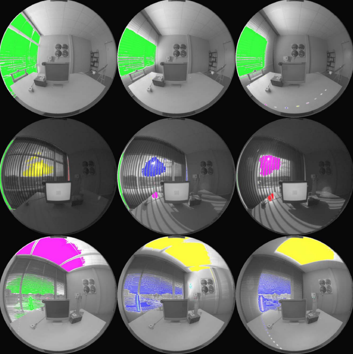
2012
[Siobhan Rockcastle, Marilyne Andersen]
Dynamic Annual Metrics for Contrast in Daylit Architecture
Rockcastle و Andersen در این مقاله دو شاخص دینامیک سالانه برای سنجش کنتراست و تغییرپذیری نور روز در فضای معماری معرفی میکنند: Annual Spatial Contrast و Annual Luminance Variability. انگیزهی پژوهش این است که شاخصهای مبتنی بر illuminance مانند DA و UDI فقط روی یک سطح مشخص تعریف میشوند و دید سهبعدی ناظر را نشان نمیدهند. شاخصهای luminance-based موجود مانند DGP نیز بیشتر بر پیشبینی ناراحتی ناشی از glare تمرکز دارند و جنبههای مثبت کنتراست و تغییرات نور روز را نمیسنجند. نویسندگان به پژوهشهایی مانند Veitch و Newsham و Loe و همکاران استناد میکنند که میانگین luminance را با perceived lightness و تغییرات luminance را با visual interest مرتبط میدانند. آنها همچنین به روشهایی مانند Demers اشاره میکنند که تصاویر را با mean brightness و standard deviation دستهبندی میکنند. از نظر آنها این روشها نمیتوانند بین تصاویری که توزیع روشنایی یکسان ولی چگالی و محل مرزهای روشن و تیرهی متفاوتی دارند، تمایز قائل شوند. برای رفع این نقص، Spatial Contrast بهجای انحراف معیار، اختلاف هر پیکسل با پیکسلهای همسایه را در قالب ماتریس محاسبه میکند و مجموع آن را برای کل تصویر به دست میآورد. این مجموع برای حذف وابستگی به رزولوشن بر «حداکثر کنتراست ممکن» تصویری هماندازه، یعنی الگوی checkerboard، تقسیم میشود تا کمیتی نسبی به دست آید. مقادیر 0 تا 0.33 کم، 0.34 تا 0.66 متوسط و 0.67 تا 1 زیاد تفسیر میشوند. برای بُعد زمانی، روش time segmentation مربوط به Lightsolve به کار رفته و سال به 56 لحظهی متقارن (8 بازهی ماهانه و 7 بازهی روزانه) تقسیم شده است. برای هر لحظه یک تصویر رندر شده و Annual Spatial Contrast از مجموع مقادیر 56 تصویر به دست میآید. Annual Luminance Variability اختلاف مقدار هر پیکسل را بین تصاویر متوالی محاسبه میکند. تفاضل بین طلوع و غروب یک روز و بین دسامبر و ژانویه حذف میشود، بنابراین 42 تفاضل باقی میماند. مجموع این تفاضلها بر تعداد پیکسلها تقسیم میشود و سقف مقیاس آن 8×10⁶ در نظر گرفته شده است. نتیجهی هر دو شاخص با دو ابزار نمایش داده میشود: cumulative image map که نشان میدهد تغییر یا کنتراست در کجای میدان دید رخ میدهد، و temporal map (STIMAP) که نشان میدهد در چه ساعت و فصلی رخ میدهد.
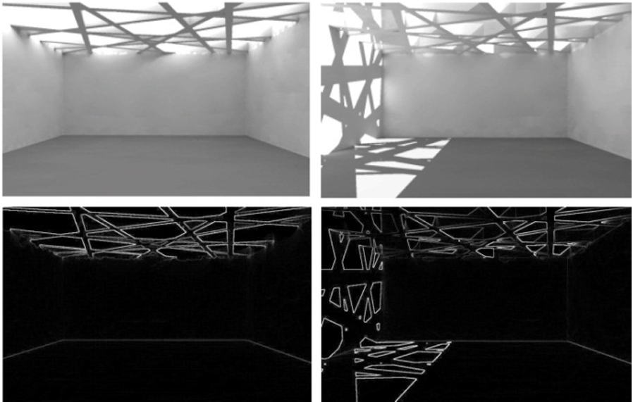
برای ارزیابی، 10 فضای انتزاعی با مساحت کف، ارتفاع سقف و موقعیت دوربین یکسان در Rhinoceros مدل شدند. این مدلها بخشی فشرده از ماتریسی شامل 74 فضا در 15 دسته بودند. دوربین رو به جنوب بود و ده فوت از دیوار پشتی فاصله داشت. ضرایب بازتاب کف، دیوار و سقف به ترتیب 0.3، 0.7 و 0.9 تنظیم شد. رندرها با Radiance و از طریق DIVA-for-Rhino برای بوستون (عرض 42° شمالی) با رزولوشن 640×480 و آسمان CIE clear sky تولید شدند. آسمان ابری کنار گذاشته شد، چون کنتراست و تنوع زمانی را چنان کاهش میداد که مقایسهی فضاها دشوار میشد. تصاویر 8-بیتی در Matlab تحلیل شدند. نویسندگان پیش از اعمال شاخصها، فرضیهای دربارهی ترتیب فضاها از بیشترین تا کمترین کنتراست و تغییرپذیری مطرح کردند و سپس نتایج شاخصها را با آن مقایسه کردند. نتایج الگوی کلی فرضیه را حفظ کرد و بیشتر فضاها حداکثر یک رتبه جابهجا شدند. با این حال ترتیب دو شاخص یکسان نبود. برای مثال case study 1 بیشترین Annual Luminance Variability را داشت ولی در Annual Spatial Contrast سوم شد. این نشان میدهد دو شاخص جنبههای متمایزی از اثر بصری نور روز را میسنجند. در این پژوهش هیچ آزمایش انسانی انجام نشده و شرکتکنندهای وجود نداشته است. ارتباط شاخصها با ادراک انسان فقط از پایهی نظری و پژوهشهای پیشین آمده و اعتبارسنجی ادراکی به کارهای آینده موکول شده است. خود نویسندگان نیز به محدودیتهایی مانند فشردهسازی دادهی سالانه در تعداد محدودی لحظه، عدم بررسی شرایط ابری و نبود مقیاس عددی جهانی اشاره کردهاند.
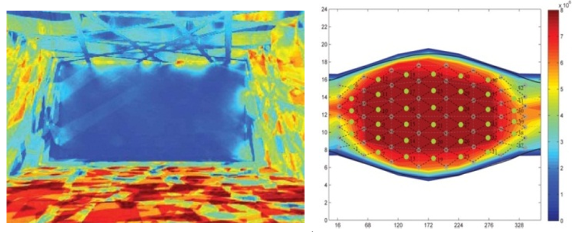
2014
[Siobhan Rockcastle, Marilyne Andersen]
Measuring the dynamics of contrast & daylight variability in architecture: A proof-of-concept methodology
نویسندگان در این مقاله نشان میدهند که شاخصهای رایج daylighting مانند DF، DA، UDI و DGP یا بر illuminance سطح کار یا بر glare و visual comfort تمرکز دارند و هیچکدام contrast را بهعنوان یک اثر بصری ارزیابی نمیکنند.
بدون آزمایش انسانی
10مدل انتزاعی
56time-step
75فضای بررسیشده
خلاصهٔ کامل پژوهش
Rockcastle و Andersen نشان میدهند که شاخصهای رایج daylighting مانند DF، DA، UDI و DGP یا بر illuminance سطح کار یا بر glare و visual comfort تمرکز دارند و هیچکدام contrast را بهعنوان یک اثر بصری مثبت ارزیابی نمیکنند. سنجههای سراسری (global) مانند mean brightness و standard deviation نیز چون مقادیر پیکسلها را از چیدمان فضاییشان جدا میکنند، نمیتوانند دو تصویر با composition متفاوت را از هم تفکیک کنند. برای نمونه، دو رندر با mean/SD برابر با 120/18 و 132/22 ترکیببندی کاملاً متفاوتی دارند. نویسندگان برای پر کردن این خلأ دو شاخص image-based پیشنهاد میکنند: Annual Spatial Contrast و Annual Luminance Variability. مسیر رسیدن از تصویر به شاخص چنین است. ابتدا رندرهای HDR در Radiance به تصاویر 8-bit با دامنه 0 تا 255 تبدیل میشوند تا روش برای عکسها و رندرهای غیر-HDR هم قابل استفاده باشد. سپس در هر تصویر، برای هر پیکسل میانگین قدرمطلق اختلاف روشنایی آن با چهار همسایهاش (local contrast) محاسبه میشود. برخلاف روش Rizzi و همکاران که میانگین میگیرد، اینجا مجموع تجمعی این مقادیر ملاک است و بر حداکثر فرضی (یک checkerboard سیاهوسفید با اندازه یکسان) تقسیم و به درصد بیان میشود (Spatial Contrast). در مثال نمایشی مقاله، سه چیدمان با mean = 127.5 و SD = 129.7 یکسان، مقادیر Spatial Contrast حدود 10٪، 50٪ و 100٪ به دست میآورند. برای بُعد زمانی، سال با 56 time-step (هفت زمان در روز × هشت زمان در سال) بر پایه روش Lightsolve تقسیم میشود. هر رندر با مدل CIE sunny sky و موقعیت میانگین خورشید در همان بازه، برای مکان بوستون (42°N، 72°W) تولید میشود. Annual Spatial Contrast مجموع Spatial Contrast در این 56 تصویر است و بهصورت نقشه فضایی تجمعی (cumulative map) و temporal map نمایش داده میشود. Annual Luminance Variability به همین ترتیب، اختلاف روشنایی هر پیکسل را بین هر instance و چهار instance مجاورش (ساعت قبل/بعد و روز قبل/بعد) میسنجد و بر حداکثر فرضی (تناوب کامل سفید و سیاه) نرمال میکند. هر دو شاخص با بیشینهی مقادیر بهدستآمده از case studyها به بازهی 0 تا 1 مقیاس شدهاند و آستانههای low/medium/high با تقسیم داده به سه بخش مساوی (quantile) تعریف شده است.
برای ارزیابی، ده مدل انتزاعی با ابعاد اتاق، ارتفاع سقف و موقعیت دوربین یکسان (رو به جنوب) ساخته شد. ترتیب آنها بر اساس بررسی 75 فضای معماری معاصر و رتبهبندی شهودی خود نویسندگان از بالاترین به پایینترین contrast و variability بود. در شبیهسازی از Rhinoceros، DIVA-for-Rhino و Radiance با رندر 640×480 و یک batch script برای 56 تاریخ و ساعت استفاده شد. نتیجه این بود که هر دو شاخص روندی نزولی و همسو با رتبهبندی شهودی نشان دادند. با این حال مدل دو برای هر دو شاخص outlier بود و نویسندگان خودشان پذیرفتند که جایگاهش باید میان مدلهای پنج و شش میبود. مدلهای یک و ده نیز درباره Spatial Contrast از روند پیروی نکردند. مدل نه هم با وجود Spatial Contrast پایین، در طلوع و غروب variability بالایی نشان داد که پیشبینی آن با شهود دشوار بود. نکته مهم برای ارتباط با ادراک انسان این است که در این پژوهش هیچ آزمایش انسانی انجام نشده و شرکتکنندهای وجود نداشته است. «اعتبارسنجی» صرفاً مقایسه با قضاوت ذهنی و آموزشدیدهی خود نویسندگان بوده و لذا خودشان آن را pre-validation مینامند. پیوند شاخصها با ادراک به پیشینهی مطالعات قبلی تکیه دارد، از جمله پژوهشهایی که luminance diversity و distribution را به perceived brightness، visual interest و preference مرتبط میدانند (مانند Cetegen، Tiller و Veitch، Wymelenberg و Inanici، و Parpairi و همکاران). نویسندگان برای گام بعدی یک مطالعه تجربی با جمعیت آماری معنادار پیشنهاد میکنند: شرکتکنندگان رندرهای مجموعهی توسعهیافته را ارزیابی کنند و گرادیان ادراکی حاصل با شاخصهای موجود و پیشنهادی مقایسه شود. همچنین به محدودیتهایی مانند وابستگی سنجه به تراکم پیکسل، نیاز به اعتبارسنجی 56 time-step در برابر محاسبات ساعتی، و اثر رنگ بر ادراک contrast اشاره میکنند.
Saliency prediction in 360◦ architectural scenes: Performance and impact of daylight variations
بازتحلیل دیتاستهای VR
3دیتاست
126صحنهٔ رندرشده
13مدل saliency
≈0.70CC بهترین مدل
خلاصهٔ کامل پژوهش
Karmann و همکاران (2023) در مقالهای در Journal of Environmental Psychology به این پرسش پرداختهاند که آیا مدلهای saliency prediction، که برای تخمین محل توجه بصری انسان از روی تصویر ساخته شدهاند، میتوانند در تصاویر 360 درجهی فضاهای داخلی نورگیر (daylit) نیز عملکرد قابلقبولی داشته باشند، و اینکه تغییر شرایط آسمان چه اثری بر پیشبینی مدلها و بر حرکت سر کاربران دارد. پژوهش بر پایهی تحلیل مجدد سه دیتاست موجود از آزمایشهای واقعیت مجازی (VR) انجام شده و آزمایش انسانیِ جدیدی در آن اجرا نشده است. این سه دیتاست، که مجموعاً 126 صحنهی رندرشدهی داخلی را شامل میشوند، عبارتاند از Rockcastle (16 صحنهی خاکستری بدون شیء و بافت، شامل 8 فضا با دو نوع آسمان)، Chamilothori (96 صحنهی رنگی با مبلمان محدود، شامل دو نوع اتاق، سه اندازهی پنجره، شش هندسهی نما و سه نوع آسمان: overcast، clear با خورشید بالا و clear با خورشید پایین) و Sitzmann (14 صحنهی داخلی کمجمعیت از یک دیتاست عمومی، همراه با eye-tracking). صحنهها با Radiance رندر شده و از طریق هدست Oculus Rift به شرکتکنندگان نمایش داده شدهاند. در Rockcastle شرکتکنندگان ایستاده و بهطور میانگین 12 نفر برای هر تصویر بودند؛ در Chamilothori شرکتکنندگان نشسته بودند و بسته به فضا 10 تا 47 نفر هر تصویر را دیدهاند؛ و در Sitzmann حدود 44 نفر (استنباطشده) در حالت نشسته شرکت داشتند. در دو آزمایش اول، هدف اصلی بررسی پاسخهای ادراکی به تغییرات نور روز بود: شرکتکننده پس از یک دورهی اکتشاف بدون گفتگو (free-viewing) که در Rockcastle به آمادگی خود فرد بستگی داشت و در Chamilothori 30 ثانیه بود، به پرسشنامهی شفاهی پاسخ میداد، در حالی که همچنان در صحنهی مجازی بود. در Sitzmann مدت مشاهده 30 ثانیه بود. در مقالهی حاضر تنها 30 ثانیهی اول لاگهای head-tracking (حدود 90 Hz در دو دیتاست اول و 120 Hz در Sitzmann) تحلیل شده است. نویسندگان تأکید میکنند که پرسشهای پرسشنامه ممکن است بر رفتار free-viewing اثر گذاشته باشد و در Chamilothori نیز بهدلیل تکرار دو نوع اتاق، درجهای از افزونگی میان صحنهها وجود دارد.
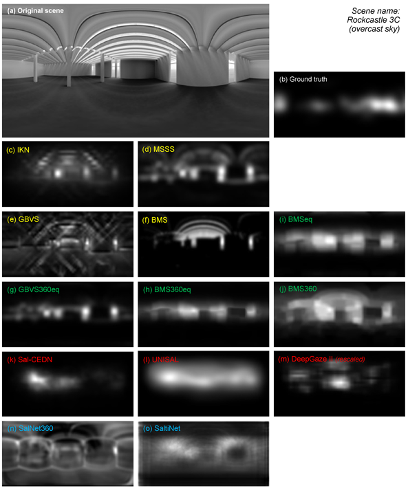
مسیر رسیدن از تصویر به شاخص به این صورت است که هر صحنه بهصورت تصویر equirectangular، که در آن محور x نمایانگر yaw و محور y نمایانگر pitch است، به 13 مدل saliency داده شده است: مدلهای سنتی (bottom-up) شامل IKN، GBVS، MSSS و BMS و نسخههای تطبیقیافته با تصویر 360 درجه (BMSeq، BMS360، BMS360eq و GBVS360eq که پسوند eq نشانهی افزودن equatorial prior است)، و مدلهای deep learning از پیشآموزشدیده شامل Sal-CEDN، UNISAL، DeepGaze II، SalNet360 و SaltiNet. علاوه بر آنها سه نقشهی مبنا (baseline) شامل یک تابع Laplacian برای بازتولید equatorial bias و دو نویز تصادفی برای مقایسه به کار رفته است. نقشهی ground truth از لاگهای حرکت سر ساخته شد: مختصات دکارتی (x, y, z) به yaw و pitch تبدیل شد، اعوجاج نواحی قطبی با روش Upenik و Ebrahimi تصحیح شد و با فیلتر Gaussian (σ = 11.7°) به نقشهی پیوستهی احتمال توجه تبدیل گردید. شاخص نهایی، ضریب همبستگی Pearson (CC) میان نقشهی پیشبینی و نقشهی ground truth پس از نرمالسازی است که هم روی کل تصویر و هم روی ناحیهی استوایی (30 درجه بالا و پایین افق) محاسبه شد، زیرا equatorial bias همبستگی کل تصویر را متورم میکند. تحلیل آماری با آزمونهای Shapiro-Wilk، Mann-Whitney، Kruskal-Wallis و اندازهی اثر r (با آستانههای Ferguson) انجام شده است. نتایج نشان داد که بهترین عملکرد به BMS360eq (CC ≈ 0.70 در ناحیهی استوایی Chamilothori) و پس از آن GBVS360eq تعلق دارد، هیچ مدلی به همبستگی بالا (0.8) نرسید، و مدلهای سنتی در Chamilothori بهتر از مدلهای DL عمل کردند در حالی که در Sitzmann عکس آن دیده شد. در Chamilothori دقت مدلها در صحنههای overcast و clear با خورشید بالا بیشتر از clear با خورشید پایین بود، چون سایهها و کنتراستهای شدید ظاهراً بهغلط بهعنوان نواحی برجسته تفسیر میشوند. همچنین همبستگی نقشههای ground truth میان انواع آسمان برای یک فضای یکسان در Chamilothori بسیار بالا (میانگین CC ≥ 0.87 در ناحیهی استوایی) ولی در Rockcastle پایین (0.27) بود. نویسندگان از این نتیجه میگیرند که در Chamilothori جهت نگاه بیشتر به پنجره و نما معطوف بوده و کمتر تحت تأثیر الگوی نور و سایه قرار گرفته است، هرچند میگویند چون این آزمایشها برای این پرسش طراحی نشدهاند، نتیجهگیری قطعی زود است. ارتباط با ادراک در این مقاله غیرمستقیم است: حرکت سر بهعنوان proxy توجه بصری به کار رفته و شاخص CC با پاسخهای ذهنی (pleasantness، interest و ...) همبسته نشده است؛ نویسندگان صرفاً یادآور میشوند که در Chamilothori الگوی سایه بر ارزیابی عاطفی فضا اثر داشت، اما حرکت سر تغییر چندانی نکرد، یعنی تفاوتهای ارزیابی عاطفی در رفتار نگاه بازتاب نیافت.
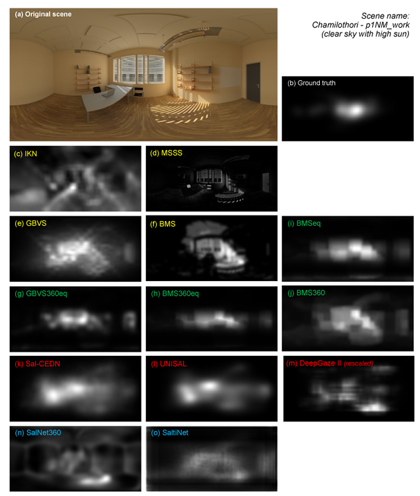
2025
Fabian Jarrin, Yasuko Koga & Diego Thomas
VR and computer vision based facade complexity analysis for building design
آزمایش انسانی دارد
177ساختمان شاخص
26شرکتکننده
4.05میانگین CICA نماهای انتخابی
خلاصهٔ کامل پژوهش
Jarrin و Koga و Thomas (2026) در مقالهای در Journal of Asian Architecture and Building Engineering سیستمی به نام Computational Image Complexity Analysis (CICA) را برای کمّیسازی پیچیدگی نما (facade complexity) معرفی کردهاند و آن را با یک آزمایش Virtual Reality (VR) روی ادراک کاربران سنجیدهاند. مسیر رسیدن از تصویر به شاخص به این صورت است: تصویر نما ابتدا به grayscale تبدیل میشود و با Gaussian blur نویزش کاهش مییابد. سپس با الگوریتم Canny edge detection در OpenCV نقشه لبهها استخراج میشود و دو معیار از آن محاسبه میگردد: edge density (نسبت پیکسلهای لبه به کل پیکسلهای تصویر) و contour count (تعداد قطعههای کانتور). این دو معیار نرمالسازی میشوند و با یک مجموع وزنی (Equation 1) به یک «CICA score» روی مقیاس 0 تا 10 تبدیل میشوند. وزنها بر پایه پژوهش Yang و همکاران (2022) و با استفاده از Analytic Hierarchy Process (AHP) تعیین شدهاند: وزن 8 برای edge density و 2 برای contour count، با این استدلال که چشم انسان لبه را بر کانتور مقدم میدارد. مبنای نظری آن نیز تعریف Venturi از پیچیدگی بهعنوان زمان پردازش ذهنی عناصر ساختمان است. این سیستم از دو راه به کار رفته است. راه اول تحلیل تاریخی 177 ساختمان شاخص در 14 سبک معماری است که هر کدام با یک تصویر frontal بازنمایی شدهاند، و روند نوسانی پیچیدگی را نشان داد. مقدار بالا برای Westminster Abbey (7.81) و مقدار پایین برای Luce Memorial Chapel (0.66) ثبت شد. ساختمان Seattle Central Library (7.78) نیز نشان داد که سیستم برای الگوهای منظم و تکراری پیچیدگی را بیشبرآورد میکند. راه دوم تحلیل نماهای مدلسازیشده در Blender است. مدل مجازی ساختمان Architectural Environment Research Building در دانشگاه Kyushu با سه الگوی سنتی hishi، tortoise و asanoha ساخته شد و هر الگو با عملیات پارامتریک مانند subdivision، rotation و decimation در 10 سطح افزایشی از پیچیدگی تولید شد. این مدلها به Unity (نسخه 2022.2.21f1) منتقل و از طریق هدست Oculus Quest 2 نمایش داده شدند.
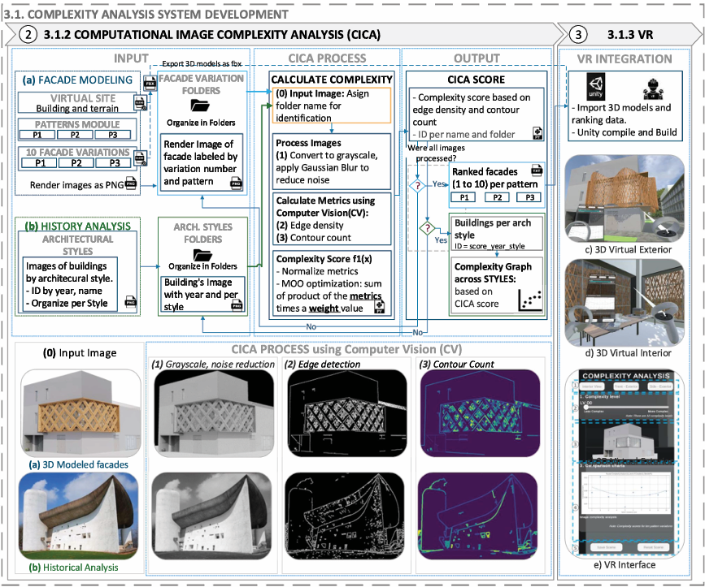
آزمایش انسانی با 26 شرکتکننده (13 زن و 13 مرد، 18 تا 31 سال، عمدتاً دانشجو و 80٪ بدون تجربه طراحی نما) در دو بازه زمانی، اکتبر 2023 و ژوئیه 2024، در دانشگاه Kyushu انجام شد و شامل سه مرحله بود. در مرحله «VR interaction»، شرکتکنندگان با فرض اینکه ساختمان محل کار یا مطالعه دائمی آنهاست، برای هر الگو راحتترین نما را از میان 10 گونه انتخاب کردند. گونهها به ترتیب تصادفی و همراه با نمایش CICA score ارائه میشدند (در مجموع 78 جلسه). در مرحله «Screen-based ranking»، همان 10 گونه بدون نمایش امتیاز سیستم بر اساس پیچیدگی ادراکشده رتبهبندی شد. در مرحله پایانی یک پرسشنامه 15سؤالی با مقیاس Likert هفتدرجهای و یک مصاحبه کوتاه انجام شد. نتایج نشان داد که میانگین CICA score نماهای انتخابشده 4.05 با SD برابر 1.2 است. این یعنی ترجیح کاربران به پیچیدگی متوسط بود و گونه سوم در هر سه الگو محبوبترین انتخاب بود. مقایسه رتبهبندی شرکتکنندگان با رتبهبندی CICA انحراف معیار میانگین حدود 9٪ را نشان داد (1.0 برای الگوی 1، 0.6 برای الگوی 2 و 1.1 برای الگوی 3). این اختلاف در سطوح بالای پیچیدگی بیشتر بود. یافتههای کیفی نیز نشان داد که شرکتکنندگان فرم را مهمتر از مواد میدانستند (نسبت 80 به 20) و نمای پیچیده را از بیرون بیشتر میپسندیدند، اما از داخل و در حضور منظر باز ترجیحشان به نمای سادهتر تمایل داشت. نویسندگان محدودیتهایی را نیز ذکر میکنند: حجم نمونه کوچک، تفاوت VR با تجربه واقعی، تکیه شاخص بر دادههای دوبعدی و نبود تحلیل پیچیدگی حجمی.
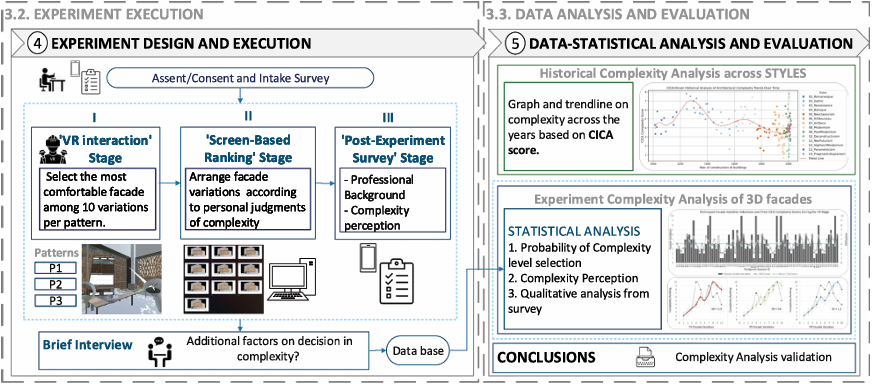
2025
[Fatih Celalettin Deniz , Kynthia Chamilothori , Sanne Schoenmakers, Yvonne A.W. de Kort]
Do (not) enter? Objective visual features of indoor scenes predict approach-avoidance responses and core affect
آزمایش انسانی دارد
360تصویر
56شاخص عینی
60شرکتکننده
0.63R²adj پیشبینی approach
خلاصهٔ کامل پژوهش
Deniz و همکاران (2025) در پژوهشی با عنوان «Do (not) enter?» به این پرسش پرداختهاند که کدام ویژگیهای بصری عینی در فضاهای داخلی بر پاسخهای approach-avoidance و core affect (شامل valence، tense arousal و energetic arousal) اثر میگذارند. برای این کار، مجموعهای متشکل از 360 عکس از چهار نوع فضای پرتکرار داخلی (دفتر کار، اتاق نشیمن، رستوران و فروشگاه؛ 90 تصویر برای هر نوع) از طریق Google Image و Bing گردآوری شد. جستوجو با 40 صفت پیشنهادیِ Russell & Pratt (1980) (مانند «calm living room») انجام شد. تصاویر تکراری، با وضوح کمتر از 600×400 پیکسل، دارای watermark یا آدم حذف شدند و با الگوریتم hyperIQA نیز تصاویری که امتیاز کیفیت آنها کمتر از 45 از 100 بود کنار گذاشته شدند. سپس 56 شاخص عینی، بدون برچسبگذاری دستی، بهصورت خودکار از هر تصویر استخراج شد و بر اساس سطوح پردازش بینایی (Low-, Mid- و High-level vision) دستهبندی گردید. در سطح Low-level (13 شاخص)، میانگین و انحراف معیار hue، saturation و brightness در فضای HSV، edge density، first-/second-order edge entropy، image entropy، fractal dimension و پارامترهای طیف فرکانس مکانی (Fourier slope و Fourier sigma) محاسبه شد. در سطح Mid-level (26 شاخص)، symmetry چپراست و بالاپایین، حضور 16 شیء رایج (مانند plant، desk، lamp و chair) که با مدل segmentation به نام OneFormer شناسایی شدند، سه ویژگی contour شامل length، orientation و angularity (بر پایهی Mid-level Vision Toolbox) و احتمال طبقهبندی تصویر بهعنوان open، enclosed، semi-enclosed، far-away horizon یا no horizon (spatial layout) استخراج شد. در سطح High-level (17 شاخص)، احتمال امکانپذیر بودن functionهایی مانند working، socializing، shopping و gaming با مدل SUN attribute (Patterson et al., 2014) برآورد شد. نوع فضا (room type) بهعنوان پیشبین وارد مدل نشد و صرفاً برای افزایش تنوع تصاویر به کار رفت. شاخصهایی با VIF بالاتر از 10 یا همبستگی مطلق بالاتر از 0.8 حذف شدند (11 شاخص).
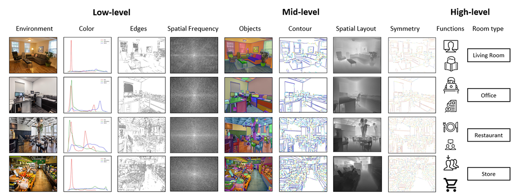
برای ربط دادن این شاخصها به ادراک انسان، یک آزمایش آزمایشگاهیِ پیشثبتشده (preregistered) در فوریه 2024 با 60 شرکتکننده (33 مرد و 27 زن، 19 تا 79 ساله، میانگین سنی 29.7) انجام شد. هر شرکتکننده 60 تصویر (15 تصویر از هر نوع فضا) را که بهصورت شبهتصادفی از میان 360 تصویر انتخاب شده بود مشاهده کرد و در نتیجه هر تصویر حدود 10 ارزیابی دریافت کرد. شرکتکنندگان در حالت ایستاده روی balance board و در حین ثبت سیگنالهای فیزیولوژیک و eye-tracking (بخشی از یک مطالعه بزرگتر) تصاویر را روی مانیتور 21 اینچی با اندازه 1024×768 پیکسل (زاویه دید حدود 24°×19°) و با نرمافزار PsychoPy مشاهده کردند. پس از دو trial آزمایشی با تصاویر خنثی از GAPED، هر trial شامل یک fixation cross به مدت 2000 تا 2200 میلیثانیه، نمایش تصویر به مدت 4 ثانیه و سپس پرسشنامه بود. مقیاسها 7درجهای بودند و هر متغیر با دو گویه سنجیده شد: valence (unhappy–happy، negative–positive)، tense arousal (tense–relaxed، jittery–calm)، energetic arousal (sleepy–awake، drowsy–wakeful) و approach-avoidance («If I saw this room, I'd leave–enter / ignore it–explore it»). پایایی گویهها بالا بود (Cronbach's alpha بین 0.86 و 0.93) و ICC بین شرکتکنندگان نیز بین 0.71 و 0.84 گزارش شد. امتیازها برای هر تصویر میانگینگیری شد تا برای هر تصویر یک نمره بهدست آید. سپس با bootstrapped stepwise regression (بر پایه AIC، 1000 نمونه bootstrap و آستانهی انتخاب 80٪) مدلهایی جداگانه برای هر سطح و یک مدل ترکیبی ساخته شد و برای سنجش استحکام آنها از 20-fold cross-validation و برای تفکیک سهم هر سطح از variance partitioning استفاده شد. مدلهای ترکیبی بهترین عملکرد را داشتند و در تبیین approach (R²adj = 0.63)، tense arousal (0.58) و energetic arousal (0.53) موفق بودند. edge density قویترین پیشبین approach بود و mean brightness تنها شاخصی بود که در هر سه مدل معنادار شد (تصاویر روشنتر مطلوبتر، انرژیبخشتر و کمتنشتر ارزیابی شدند). همچنین احتمال فضای semi-enclosed و حضور plant و lamp با approach رابطه مثبت و حضور desk، far-away horizon و function کاری (working) رابطه منفی داشتند. variance partitioning نشان داد بخش عمدهی واریانس توضیحدادهشده بین سطوح مختلف مشترک است؛ سهم منحصربهفرد بیشترین مقدار برای approach مربوط به Mid-level، برای tense arousal مربوط به High-level و برای energetic arousal مربوط به Low-level بود. نویسندگان این کار را یک proof-of-concept میدانند که نشان میدهد تحلیل عینی همزمان ویژگیها در سطوح مختلف بینایی برای درک پاسخهای عاطفی به فضاهای داخلی لازم است.
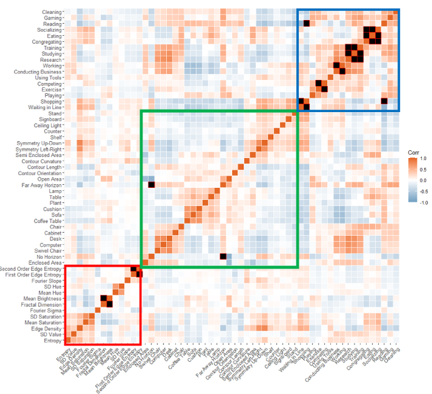
2026
[Cleo Valentine, Ian Hosking, Arnold J. Wilkins, Heather Mitcheltree, Cameron Smith, Emilia Butters, Olivier Penacchio]
Impact of Architecture Façade Design on Neurophysiological
Stress Using Functional Near-Infrared Spectroscopy and Heart
Rate Variability
آزمایش انسانی دارد
9تصویر نما
18شرکتکننده
12نفر در تحلیل fNIRS و HRV
خلاصهٔ کامل پژوهش
Valentine و همکاران (2026) در مقالهای در مجله Buildings بررسی کردهاند که آیا نماهای ساختمانی با ویژگیهای آماری دور از تصاویر طبیعی، علاوه بر ایجاد ناراحتی بینایی (visual discomfort)، پاسخهای فیزیولوژیک و عصبی قابل اندازهگیری هم ایجاد میکنند یا نه. فرضیهی مفهومی پژوهش، یک مسیر «قشر بینایی به سیستم خودمختار» است: فعالیت بیشازحد قشر بینایی در برابر الگوهای پرکنتراست و تکرارشونده، که در بسامدهای فضایی نزدیک به 3 سیکل بر درجه متمرکز هستند، میتواند به استرس سیستمی و در درازمدت به بار آلوستاتیک (allostatic load) منجر شود. محرکها نُه تصویر از یک نمای سفید مینیمال بودند که با Midjourney (v6.1) تولید شده و در مطالعهی قبلی همین نویسندگان (Valentine et al., 2025) به کار رفته بود. در این تصاویر هندسهی پایه، زاویهی دید و مقیاس ثابت مانده و فقط عناصر طبقهی بالا (پردهی چوبی یا فلزی، پنجرههای منظم، بالکن با نردهی عمودی، پنجرهی قوسی و قوس بزرگ) تغییر کرده بود. شاخص محاسباتی مورد استفاده ViStA (Visual Stress Analysis) است که بر روش Penacchio و Wilkins (2015) استوار است. در این روش تصویر به سطح خاکستری (greyscale) تبدیل و به مربعهای همپوشان هماندازهی فووئا (fovea-sized tiles) تقسیم میشود. سپس برای هر مربع، باقیماندهی طیف دامنهی فوریه نسبت به توزیع مرجع تصاویر طبیعی (رابطهی 1/f) محاسبه و با حساسیت کنتراست انسان وزندهی میشود. از مقادیر همهی مربعها سه شاخص peak residuals، average residuals و ضریب تغییرات (coefficient of variation) به دست میآید و یک heatmap نسبی نیز تولید میشود. برای نُه تصویر، average residuals از حدود 3.5×10⁸ (تصویر بدون المان تکراری) تا 1.7×10⁹ (تصویر پردهی افقی) متغیر بود. این مقدار در تحلیل آماری بهعنوان پیشبینیکنندهی ادراک ناراحتی، پیچیدگی و کسالتبار بودن نما به کار رفت.
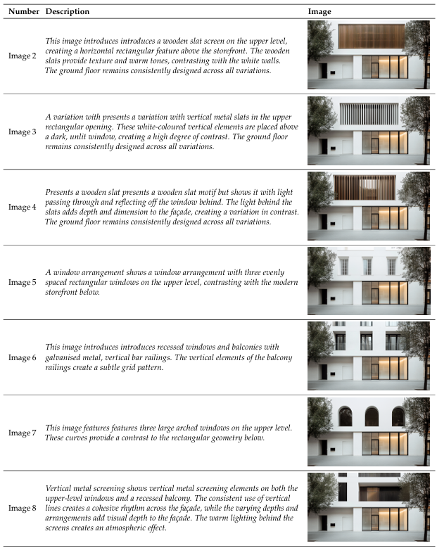
بخش انسانی پژوهش شامل 18 شرکتکنندهی 25 تا 59 ساله (میانگین 32.4 و انحراف معیار 9.8؛ 12 زن و 6 مرد) بود که بهصورت نمونهی در دسترس از شبکههای دانشگاهی جذب شدند. همه بینایی طبیعی یا اصلاحشده داشتند و افراد تحت درمان میگرن یا صرع از مطالعه خارج شدند. جلسهی آزمایش حدود 20 تا 25 دقیقه طول میکشید. تصاویر با پروژکتور در یک اتاق جلسه به ابعاد 239.5×135.5 سانتیمتر و از فاصلهی 200 سانتیمتری نمایش داده میشدند تا زاویهی دید حدود 59.6 در 36.8 درجه شود و تجربهای نزدیک به دیدن نمای واقعی ایجاد کند. این محرکها با لومینانسمتر کالیبره نشده بودند و مقایسهها فقط نسبی است. فعالیت همودینامیک قشر اکسیپیتال با دستگاه fNIRS مدل Artinis Brite23 با 27 کانال ثبت شد. برای HRV، بند مچی Polar بهدلیل مشکل نرمافزاری کنار گذاشته شد و فواصل بینضربانها از مؤلفهی نبضی سیگنال fNIRS استخراج و به شکل SDNN گزارش شد. پروتکل ابتدا یک baseline پنجدقیقهای روی زمینهی خاکستری 18٪ و یک Pattern Glare Test پانزدهثانیهای داشت. سپس دو تصویر با تنش بصری پیشبینیشدهی بالا و پایین (تصاویر 1 و 2) هرکدام پنج دقیقه و با ترتیب شبهتصادفی نمایش داده شدند و بین آنها 60 ثانیه فاصلهی خاکستری بود. در فاز دوم هشت تصویر دیگر هرکدام 20 ثانیه، با 30 ثانیه خاکستری بین آنها و ترتیب تصادفی، نشان داده شد. در پایان، شرکتکنندگان هر تصویر را روی مقیاس لیکرت 7درجهای برای ناراحتی، پیچیدگی و کسالتبار بودن (معکوس علاقه) بهصورت شفاهی امتیاز دادند. دادههای fNIRS مربوط به پنج نفر بهدلیل کیفیت پایین سیگنال حذف شد و تحلیل fNIRS و HRV روی 12 نفر انجام گرفت، در حالی که 18 نفر همهی ارزیابیهای ذهنی را تکمیل کردند. در تحلیل با مدلهای اثرات مختلط (mixed-effects models)، هویت نما بر امتیاز هر سه بُعد ذهنی اثر معنادار داشت (برای ناراحتی p = 3.3×10⁻⁷). شاخص ViStA نیز هر سه امتیاز را پیشبینی کرد (برای ناراحتی p = 0.0024). اثر نما بر HRV کوچک اما معنادار بود (p = 0.0026) و بیشتر واریانس به تفاوتهای فردی مربوط میشد (R²m = 0.0006 و R²c = 0.72). در سیگنال HbO هیچ تفاوت معناداری بین محرکها دیده نشد. نویسندگان این نتیجه را به توان آماری پایین و محدودیتهای اندازهگیری اکسیپیتال نسبت میدهند و مطالعه را پایلوتی با سهم روششناختی میدانند.
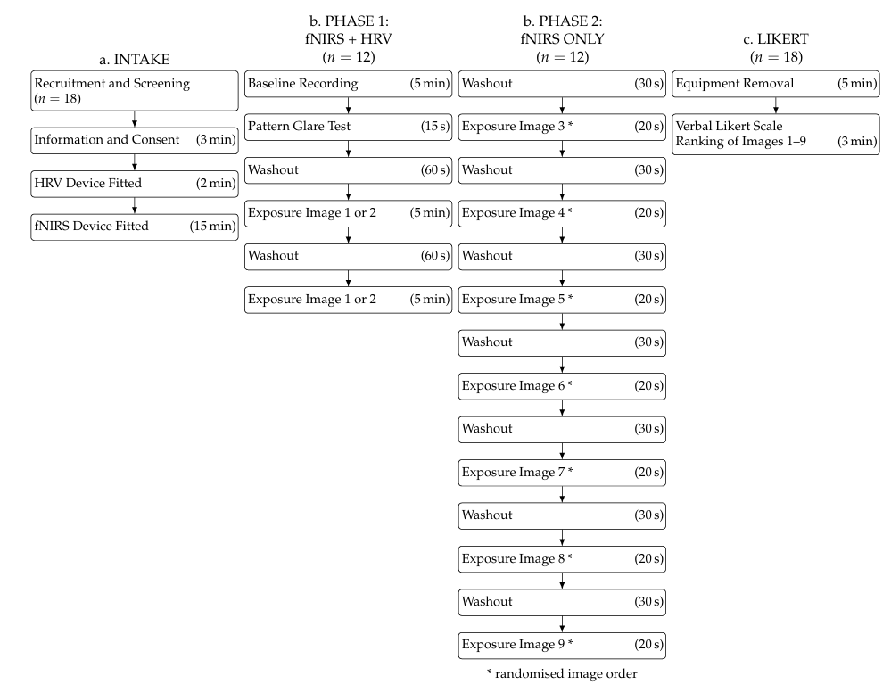
ویژگیها
سه سطح پردازش بینایی: Low-، Mid- و High-level
تقسیم پردازش بینایی به سطوح Low-، Mid- و High-level را نمیتوان به یک فرد یا یک سال مشخص نسبت داد؛ این تقسیمبندی بهمرور و از تلاقی چند سنت پژوهشی شکل گرفته است. ریشهٔ فکری آن به «استنتاج ناخودآگاه» هلمهولتز (۱۸۶۷) و اصول سازماندهی ادراکی در مکتب گشتالت برمیگردد. پشتوانهٔ عصبشناختی آن را کشف سلولهای ساده و پیچیدهٔ V1 توسط هوبل و ویزل (۱۹۵۹ تا ۱۹۶۲) و پس از آن معرفی دو مسیر بینایی «چه» و «کجا» (Ungerleider & Mishkin, 1982) و سلسلهمراتب قشر بینایی (Felleman & Van Essen, 1991) فراهم کرد. دیوید مار (۱۹۷۸ و ۱۹۸۲) با معرفی سه بازنمایی primal sketch، 2.5D sketch و 3D model این ایده را در قالب یک نظریهٔ محاسباتی درآورد و بیش از دیگران در ماندگار شدن آن نقش داشت. پس از او Treisman و Gelade (۱۹۸۰)، Biederman (۱۹۸۷) و Palmer (۱۹۹۹) الگوهای مرحلهای دیگری پیشنهاد دادند. با این حال، سطح میانی سالها کمتر از دو سطح دیگر بررسی شد تا اینکه Peirce (۲۰۱۵) بر نیاز به پژوهش دربارهٔ آن تأکید کرد. در نهایت Malcolm و همکاران (۲۰۱۶) و Epstein و Baker (۲۰۱۹) این چارچوب سهسطحی را وارد حوزهٔ ادراک صحنه کردند؛ همان منابعی که مقالهٔ Deniz و همکاران (۲۰۲۵) نیز به آنها استناد میکند.
ویژگیهای خاممعنا
1
Low-level vision
سطح پایین
این سطح بازنمایی «مبتنی بر تصویر» است. نورونهای V1 معنای صحنه را کد نمیکنند، اما اطلاعات زیادی دربارهٔ ویژگیهای تصویر دارند (Peirce, 2015).
بستر عصبی
از گیرندههای نوری تا V1
ویژگیهای نمونه
روشنایی
کنتراست
رنگ (hue, saturation, brightness)
orientation
spatial frequency
edge density
آمار طیفی تصویر (مثل Fourier slope)
2
Mid-level vision
سطح میانی
این سطح ویژگیهای ابتدایی را به مجموعههای ترکیبی از شکلها و هندسههای جزئی اشیا و صحنهها تبدیل میکند. اینجا پلی میان ویژگیهای خام و معنا ساخته میشود.